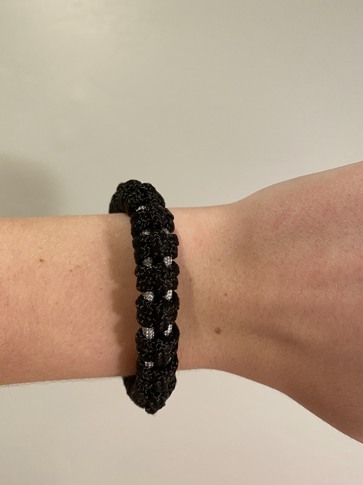
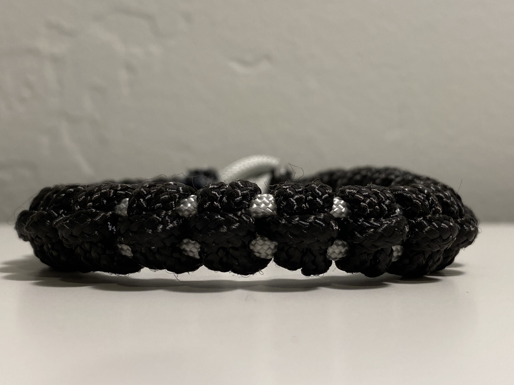

Strategy: Athena is well-known for her strategy and military skill. As a tribute to that, this bracelet will give you the ability to single-handedly destroy the Trojan army. The paracord used in this bracelet is often associated with survival, and in turn, with military strategy.
 